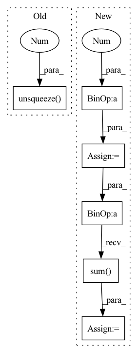

Pattern ID :1559
Before Change
if prediction.size() != target.size() or target.ndim < 3:
raise TypeError(fInputs must be of the same shape (batch_size,channels,samples)
got {prediction.size()} and {target.size()} instead)
prediction,target = prediction.unsqueeze(1 ) ,target.unsqueeze(1)
class Avergeloss(nn.Module):
After Change
raise TypeError(fInputs must be of the same shape (batch_size,channels,samples)
got {prediction.size()} and {target.size()} instead)
target_energy = torch.sum(target**2 ,keepdim=True,dim=-1)
scaling_factor = torch.sum(prediction*target,keepdim=True,dim=-1) / target_energy
target_projection = target * scaling_factor
noise = prediction - target_projection
ratio = torch.sum(target_projection**2,dim=-1) / torch.sum(noise**2,dim=-1)
si_sdr = 10* torch.log10(ratio).mean(dim=-1)
if self.reduction == "sum":
si_sdr = si_sdr.sum()
elif self.reduction == "mean":
si_sdr = si_sdr.mean()
else:
passIn pattern: SUPERPATTERN
Frequency: 3
Non-data size: 6
Instances Fragment ID: 5331539
Project Name: shahules786/mayavoz
Commit Name: 838b7d2357c75c14e09bc7c4daef1518269fae63
Time: 2022-09-28
Author: shahules786@gmail.com
File Name: enhancer/loss.py
M Class Name: Si_SDR
N Class Name: Si_SDR
M Method Name: forward(3)
N Method Name: forward(3)
M Parent Class: nn.Module
N Parent Class: nn.Module
M File Name: enhancer/loss.py
N File Name: enhancer/loss.py
M Start Line: 49
M End Line: 49
N Start Line: 55
N End Line: 69
Before Change
top, down, left, right = self.query_neighbors(y_anchor=y_anchor, x_anchor=x_anchor, padding=padding)
mean_matrix = self.mean_table[top:down + 1, left:right + 1, :]
std_matrix = self.std_table[top:down + 1, left:right + 1, :]
x_mean = mean_matrix.mean(dim=0).mean(dim=0).unsqueeze(0 ) .unsqueeze(-1).unsqueeze(-1) //self.kernel * // should deal with the boundary
x_std = std_matrix.mean(dim=0).mean(dim=0).unsqueeze(0).unsqueeze(-1).unsqueeze(-1) //self.kernel *
//x_mean = x_mean.unsqueeze(-1).unsqueeze(-1)
//x_std = x_std.unsqueeze(-1).unsqueeze(-1)After Change
top = y_anchor
down = y_anchor + 2 * padding + 1
left = x_anchor
right = x_anchor + 2 *padding + 1
x_mean = self.padded_mean_table[:,:,top:down + 1, left:right + 1] // 1, C, H, W
x_std = self.padded_std_table[:,:,top:down + 1, left:right + 1] // 1, C, H, W
assert self.kernel.shape == x.mean.shape
x_mean = x_mean * self.kernel // 1, C, H, W
x_std = x_std * self.kernel // 1, C, H, W
x_mean = x_mean.flatten(start_dim=2).sum(dim=2) // [1, C, H, W] -> [1, C, H * W] -> [1, C]
x_std = x_std.flatten(start_dim=2).sum(dim=2) // [1, C, H, W] -> [1, C, H * W] -> [1, C]
x_mean = x_mean.unsqueeze(-1).unsqueeze(-1) // [1, C] -> [1, C, 1, 1]
x_std = x_std.unsqueeze(-1).unsqueeze(-1) // [1, C] -> [1, C, 1, 1] Fragment ID: 5330258
Project Name: kaminyou/urust
Commit Name: 63159b688ad053bad7fd41015170f131d547439d
Time: 2022-01-27
Author: kaminyouho@aetherai.com
File Name: models/kin.py
M Class Name: KernelizedInstanceNorm
N Class Name: KernelizedInstanceNorm
M Method Name: forward(5)
N Method Name: forward(5)
M Parent Class: nn.Module
N Parent Class: nn.Module
M File Name: models/kin.py
N File Name: models/kin.py
M Start Line: 83
M End Line: 96
N Start Line: 89
N End Line: 115
Before Change
a.scatter_(dim=1, index=label.unsqueeze(1), src=src)
sigma = torch.ones_like(inp, device=inp.device, dtype=inp.dtype) * self.m
src = torch.ones_like(label.unsqueeze(1 ) , dtype=inp.dtype, device=inp.device) - self.m
sigma.scatter_(dim=1, index=label.unsqueeze(1), src=src)
return self.loss(a * (inp - sigma) * self.gamma, label)After Change
ap = torch.clamp_min(- sp.detach() + 1 + self.m, min=0.)
an = torch.clamp_min(sn.detach() + self.m, min=0.)
sigma_p = 1 - self.m
sigma_n = self.m
logit_p = ap * (sp - sigma_p) * self.gamma
logit_n = an * (sn - sigma_n) * self.gamma
loss = torch.log(1 + torch.clamp_max(torch.exp(logit_n).sum() * torch.exp(- logit_p).sum() , max=1e38))
z = - torch.exp(- loss) + 1
sp.backward(gradient=z * ap * torch.softmax(logit_p, dim=0))
sn.backward(gradient=z * an * torch.softmax(logit_n, dim=0)) Fragment ID: 5332024
Project Name: tinyzeamays/circleloss
Commit Name: 9c909ec6274b1c9c139a62f9f84ecf91c5edee35
Time: 2020-04-03
Author: 1049793129@qq.com
File Name: circle_loss.py
M Class Name: CircleLoss
N Class Name: CircleLossBackward
M Method Name: forward(3)
N Method Name: forward(3)
M Parent Class: nn.Module
N Parent Class: nn.Module
M File Name: circle_loss.py
N File Name: circle_loss.py
M Start Line: 23
M End Line: 34
N Start Line: 43
N End Line: 58